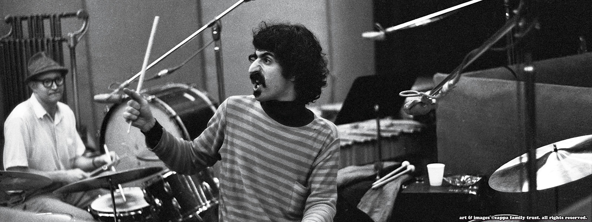

Welcome to my Zappa hub
This is a site to detail the life and legend of the American musician and composer, Frank Zappa.
Frank Vincent Zappa was born on December 21, 1940 in Baltimore, Maryland. In his career spanning 30 years, he was able to release 62 albums and an additional 57 posthumous albums. Zappa was renowned for his work ethic, cutting satire, musical virtuosity, and diverse experimentation.
Share your Zappa thoughts
Be Frank...
I will attempt to respond via email mhowar19@asu.edu